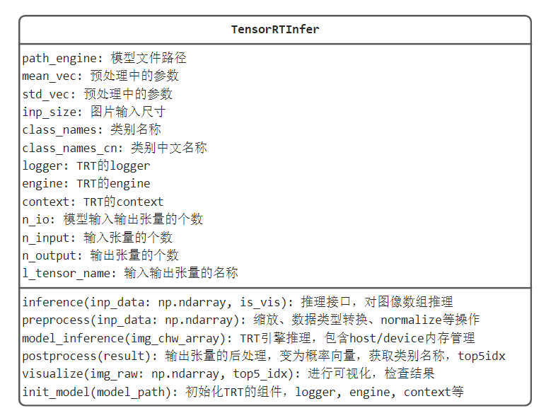

12.9 TRT python 工程化
前言
在生产应用中，需要将trt的engine封装为类，内部实现engine初始化、推理的内存申请和释放，host与device的数据迁移，对外提供推理接口。
这样，算法推理功能才能优雅地嵌入到整个生产流程的代码中，供上下游调用。
本节将参考多个代码案例，总结了基于context.execute_v3的trt模型类编写。
两种推理方式——context
在前面介绍trt的python代码推理时，执行推理采用的是execute_async_v3，在不少案例教程中使用的是execute_v2，这将导致代码无法复用。
为了了解execute_v2和execute_async_v3的区别，下面将会介绍：
- 两者差异
- 基于yolov5代码，以及Nvidia官方代码，分析execute_v2的机制
两者差异
def execute_v2(self, bindings, p_int=None): # real signature unknown; restored from __doc__
"""
execute_v2(self: tensorrt.tensorrt.IExecutionContext, bindings: List[int]) -> bool
Synchronously execute inference on a batch.
This method requires a array of input and output buffers. The mapping from tensor names to indices can be queried using :func:`ICudaEngine.get_binding_index()` .
This method only works for execution contexts built from networks with no implicit batch dimension.
:arg bindings: A list of integers representing input and output buffer addresses for the network.
:returns: True if execution succeeded.
"""
def execute_async_v3(self, stream_handle): # real signature unknown; restored from __doc__
"""
execute_async_v3(self: tensorrt.tensorrt.IExecutionContext, stream_handle: int) -> bool
Asynchronously execute inference.
Modifying or releasing memory that has been registered for the tensors before stream synchronization or the event passed to :func:`set_input_consumed_event` has been triggered results in undefined behavior.
Input tensors can be released after the :func:`set_input_consumed_event` whereas output tensors require stream synchronization.
:arg stream_handle: The cuda stream on which the inference kernels will be enqueued.
"""
根据函数注释，可知execute_v2接收的是device地址，即要求数据已经变到gpu上，执行execute_v2时，仅仅实现gpu的显存数据读取与运算。
根据函数注释，可知execute_async_v3接收的是cuda流的编号，即默认通过该cuda流进行运算（具体含义并不熟，需要深入了解cuda编程，这里猜想是默认用的0），这就要求context知道从哪里取输入数据进行推理，会有额外的context.set_tensor_address(l_tensor_name[0], d_input) ， d_input是显存地址。
YOLOv5 TRT推理
关于execute_async_v3，可回顾本章第二节的工作流程梳理。
为了解基于execute_v2进行推理时，需要进行的操作流程，这里分析YOLOv5官方代码。
yolov5支持多种backend的推理，方式在链接中也给出了详细步骤，这里不再重复。
# 1. 导出trt模型
python export.py --weights best.pt --data data/mydrone.yaml --include engine --device 0
# 2. 推理
python detect.py --weights best.engine --data data/mydrone.yaml --source G:\虎门大桥车流\DJI_0049.MP4
核心代码在detect.py和common.py中，其中实现了基于TRT的engine推理代码，这里主要关注模型初始化和模型推理两部分。
模型初始化核心代码：
yolov5-master/models/common.py 中的DetectMultiBackend的elif engine部分：
- 通过bindings字典管理输入输出数据，包括数据的'name', 'dtype', 'shape', 'data', 'ptr'。
- 数据的地址ptr指在device（GPU）上的地址！这里基于torch库对数据做操作，并实现数据搬迁到GPU。这点与我们手动写推理不一样！
- execute_v2需要输入的地址，恰恰是GPU地址，因此可借助torch的to(device)方法得到GPU上数据的地址。
Binding = namedtuple('Binding', ('name', 'dtype', 'shape', 'data', 'ptr'))
logger = trt.Logger(trt.Logger.INFO)
with open(w, 'rb') as f, trt.Runtime(logger) as runtime:
model = runtime.deserialize_cuda_engine(f.read())
context = model.create_execution_context()
bindings = OrderedDict()
output_names = []
for i in range(model.num_bindings):
name = model.get_binding_name(i)
dtype = trt.nptype(model.get_binding_dtype(i))
if model.binding_is_input(i):
pass # 略
else:
output_names.append(name)
shape = tuple(context.get_binding_shape(i))
im = torch.from_numpy(np.empty(shape, dtype=dtype)).to(device)
bindings[name] = Binding(name, dtype, shape, im, int(im.data_ptr()))
binding_addrs = OrderedDict((n, d.ptr) for n, d in bindings.items())
batch_size = bindings['images'].shape[0] # if dynamic, this is instead max batch size
模型推理核心代码
yolov5-master/models/common.py 中的DetectMultiBackend的forward函数的elif self.engine部分：
self.binding_addrs['images'] = int(im.data_ptr()) # 设置输入数据的GPU地址，im已经是在GPU上的tensor了
self.context.execute_v2(list(self.binding_addrs.values())) # 传入数据的GPU地址，执行推理
y = [self.bindings[x].data for x in sorted(self.output_names)] # 完成推理后，到输出张量（已在GPU上）取推理结果
小结：由此可知道yolov5的trt推理，借助了torch库将cpu上的数据与gpu上的数据进行关联
这种方式仍旧依赖pytorch，为此需要进一步探究手动管理gpu显存时，如何基于execute_v2进行推理，难点在于如何获得gpu上显存的地址。
Nvidia官方案例代码
这里仅观察输入给execute_v2的数据如何得来，为此，代码倒着来看。
1. 在infer函数中：
self.context.execute_v2(self.allocations)
2. 观察init中 self.allocations的定义
shape = self.engine.get_binding_shape(i)
size = np.dtype(trt.nptype(dtype)).itemsize
for s in shape:
size *= s
allocation = common.cuda_call(cudart.cudaMalloc(size))
self.allocations.append(allocation)
由此可知，传入execute_v2的地址是通过cudart.cudaMalloc(size)获取的，这个在第二节中也采用了这个方式获取GPU上数据的地址。
size则是通过shape和单个数据大小乘积得到。
通过两个开源代码分析，发现execute_v2还是需要手动管理显存，为此接下来还是基于execute_async_v3进行推理类的编写。
原因有两个：
第一，本章第二节就是基于execute_async_v3的流程介绍数据在host和device之间是如何传输，流转的。
第二，Nvidia官方教程中基于TRT 8.5给出了一个较好的host、device数据管理方法，代码简洁易理解。-
推理类的面向对象设计
在工程化时，算法模块对外提供推理函数，供主流程调用，因此需要将算法模块封装为类，并将相关属性和方法在类中实现，便于管理。
在推理类中，为了实现推理，首先需要构建context，而构建context所需要的过程步骤，均放到init函数中实现，同时配置模型相关的参数，如类别名称，阈值，mean/std等。
根据ResNet50模型的特点，TensorRTInfer的UML类图设计如下：

主要包括对外提供推理接口inference，围绕推理过程，实现预处理，TRT模型推理，后处理，可视化，TRT模型初始化等函数功能。
配套完整代码在这里，代码中实现的推理类已可以完成独立功能，但仍有更进一步优化点，包括：
- 组batch推理模式，实现更高吞吐量
- 预处理模块以batch形式处理，提高数据预处理效率
- 预处理模块放置GPU进行处理，均衡CPU和GPU的负载
- 采用分布式队列机制，解耦任务调用，任务处理，可参考celery库
- 对于C/S架构的设计，需要用web服务包装算法，常用的有flask, fastapi, django，对于一般工程，可用flask, fastapi，复杂工程用django。
更多TRT模型类参考：
engine常用方法/属性
在上述TRT模型构建中，使用了engine中一系列方法和属性，这里简单总结一下。
- engine.num_io_tensors： 获取输入、输出数据个数
- engine.get_tensor_name(index)：根据数据的顺序，获取名称，这个名称是onnx导出时设置的
- engine.get_tensor_mode(tensor_name)：根据数据名称，获取是Input还是output类型。
小结
本结整理TRT在python下推理的代码编写，包括对比execute_v2与v3的差异，并实现了推理类的设计与实现。
对于TensorRT的学习及使用，暂时告一段落，通过本章内容，可以将pytorch模型转换为trt模型，并在python中实现高效推理，同时了解TensorRT常用工具的使用。
对于一般场景，本章的TensorRT工具及量化内容可以满足，但对于边缘端、高性能部署，仍需精进模型加速知识。